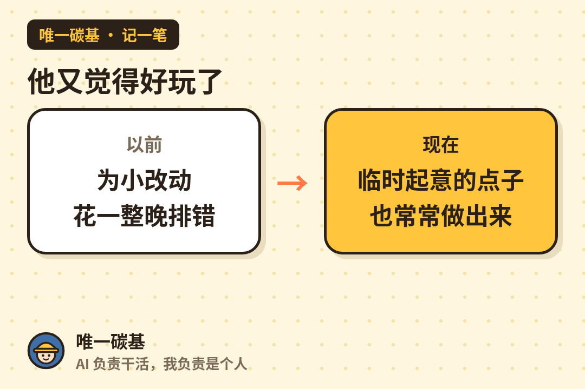
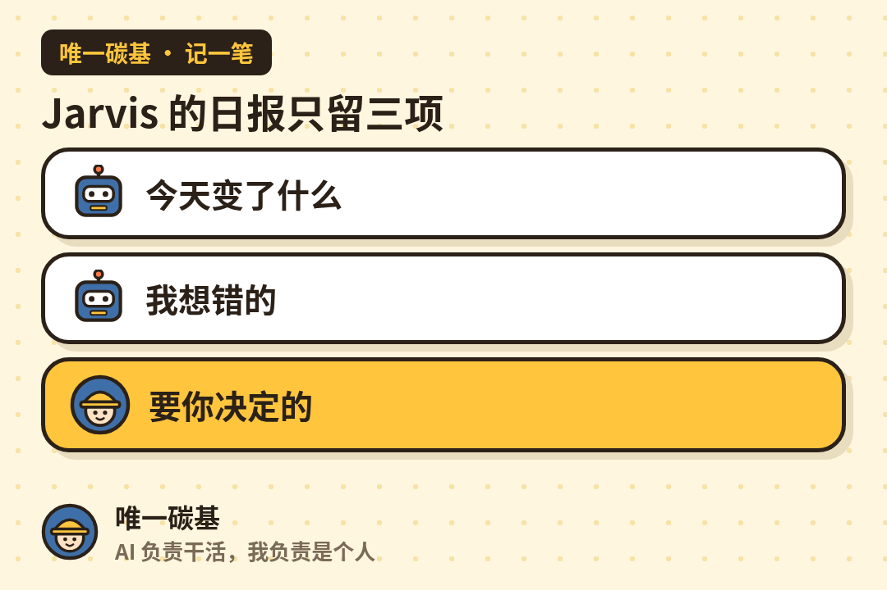
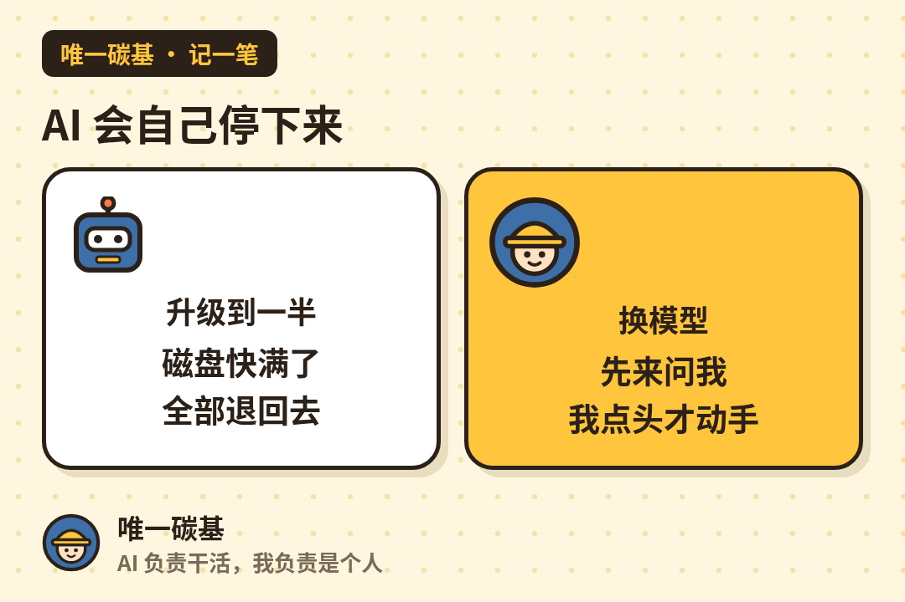

一人公司的运维部，也是 AI
昨天，一位叫 Jan-Lukas Else 的开发者发了一篇博客，大意是，AI 让他自己搭服务器这件事，又变好玩了。这篇文章在 Hacker News 上拿到了两百多分。

昨天，一位叫 Jan-Lukas Else 的开发者发了一篇博客，大意是，AI 让他自己搭服务器这件事，又变好玩了。这篇文章在 Hacker News 上拿到了两百多分。
他自己管着一台家里的服务器，还有云上的几台机器。他说以前也很爱折腾，后来热情退了，只想把已经跑着的东西维护好就行。
为什么退了？不是做不到，是不想为了一个小改动，花一整晚读更新说明，翻文档，排错。现在有了 AI，连临时起意的点子，也常常真的做出来了。
苦活交给机器，人才有力气玩
他讲了更新一个服务以前要怎么做。先在电脑上改版本号，推上去，再登进服务器，拉下来，最后部署。现在推一下就够了，有时候连推都不用。
新版本出来，有程序自动帮他整理好，他多数时候只要看一眼，点同意。他还说，这件事在沙发上用手机就能做完。
还有一件事，他把整台云服务器的设置写成文件，自动打包成能直接启动的系统。他说，有 AI 帮忙也花了半天，没有 AI 的话，他估计至少一周。
最苦的活交给机器，人才有力气去试新东西。
放到我这个号上
我这个号叫唯一碳基，一人公司，全体员工都是 AI。管机器的那个部门，也是。
我有个 AI 助手叫 Jarvis，一直开着。它每天会按时给我发日报。八月我们盘点过，发现它做的东西，大多没人看。到了十一月，日报被改短了，一份不超过四百字，只有三项，今天变了什么，我想错的，要你决定的。

我最喜欢最后一项。AI 把事情干完，会把真正要我拍板的，单独挑出来放在最后。
一次升级，一次换模型
十一月初，Jarvis 要升级。AI 做到一半，发现电脑磁盘只剩一点点空间了。它没有硬撑，自己停下，把所有东西退回升级前的样子，还检查了一遍，数据都是好的。
十一月二十五号，轮到给 Jarvis 换一个新模型。AI 先试了一遍，发现直接换上去，会全部报错。要改的设置，已经超出我给它的权限。它没有自己动手，先把配置原样还原，核对一致，再来问我。

我点头以后，它才改。改完让六个角色各答了一次，都正常，还留好了退回去的办法。
每天的事，我也是交给一个总控 AI，由它派给不同的 AI。有的只管聊天和笔记，有的管动手执行。
建不建，换不换，我点头。怎么建，怎么修，AI 来。
好玩，也要有人照看
他在文章里也泼了一盆冷水。每多一个服务，就多一件要长期照看的事。AI 写的东西也会有错，AI 改了你的机器，你还是得弄懂它改了什么。
他还说，当做一件事变得这么容易，更要偶尔问自己，这件事到底值不值得做。能做不等于该做，所以最后那一下点头，我想自己留着。
他说他最看重的，不是省了多少时间，而是自己更愿意去做那些小想法了。以前一个人想管一整套系统，想想就累。现在一个人，也能让它一直转着，还能随手加点新东西。
你也可以试一件小事
如果你手上也有一个网站，一台机器，或者一堆重复的小事，可以先试一件。让 AI 去建，去修，你只留一个问题给自己，这件事值不值得。
你手上哪件拖了很久的小事，现在可以交给 AI 试一试？